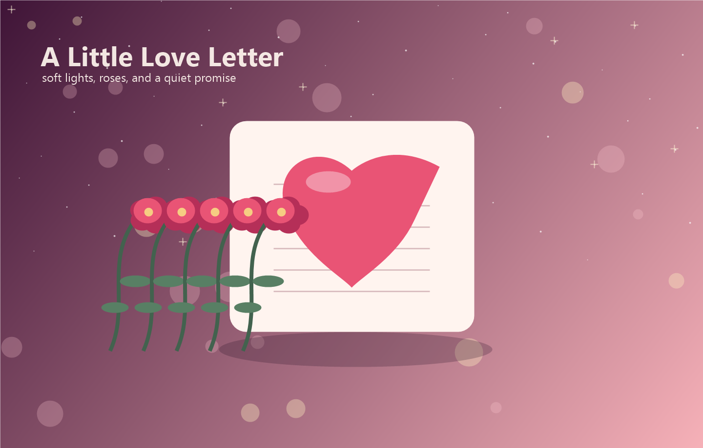

你的出现很温柔
像夜里忽然亮起的一盏小灯，让普通日子也多了一点被期待的光。

有些喜欢不用很用力地证明，它会藏在每一次想起你时上扬的嘴角里，也会落在每一句“你今天过得好吗”里面。
Reasons
像夜里忽然亮起的一盏小灯，让普通日子也多了一点被期待的光。
它不吵闹，却能把疲惫慢慢推远，让心里重新变得柔软。
不急着定义所有答案，只想把每一个今天都过得比昨天更靠近一点。
Little Timeline
世界好像安静了一点，只剩下想多看你一眼的念头。
风很轻，话题很普通，可心里偷偷把那一刻收藏了很久。
想认真陪你看更多日落，也想把平凡日子过成值得纪念的样子。
For You
点击信封，收下这句很认真、很轻、也很久的喜欢。